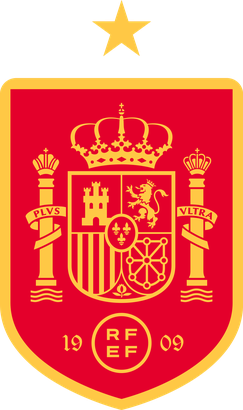

Favoritos ao título
França

Favorita absoluta e líder do ranking da FIFA, a França chega à Copa de 2026 com um elenco estelar liderado por Mbappé. Mesmo com baixas pontuais por lesão, a profundidade do grupo comandado por Deschamps mantém a expectativa alta pela busca do tetracampeonato mundial.
Pontos fortes
- Profundidade do Elenco: É a seleção com o maior "estoque" de talentos do mundo; se um titular se lesiona, o reserva costuma ser um astro de elite europeia.
- Poder de Decisão: Possui jogadores como Mbappé, que têm a capacidade individual de resolver partidas travadas em um único lance de velocidade.
- Consistência Tática: Sob o longo comando de Deschamps, a equipe tem uma identidade pragmática e resiliente, sabendo sofrer e contra-atacar com precisão.
Espanha

A Espanha chega à Copa como a atual campeã da Eurocopa, consolidando um estilo de jogo envolvente e vertical sob o comando de Luis de la Fuente. Liderada pelos jovens astros Lamine Yamal e Nico Williams, a Roja é vista como uma das grandes favoritas, unindo a tradicional posse de bola a uma nova e perigosa agressividade ofensiva.
Pontos fortes
- As Pontas Explosivas: Com Lamine Yamal e Nico Williams, a Espanha deixou de ser apenas posse de bola horizontal para se tornar um time vertical e letal no um contra um.
- Controle de Meio-Campo: A escola espanhola continua produzindo os melhores regentes, garantindo que a equipe dite o ritmo de quase todos os jogos que disputa.
- Identidade Coletiva: É, talvez, a seleção que joga de forma mais parecida com um clube, com mecanismos de pressão e movimentação muito bem treinados.
Brasil

O Brasil chega à Copa de 2026 em um momento de reconstrução, buscando sob o comando de Dorival Júnior a solidez que faltou nas Eliminatórias. Com o protagonismo de Vinícius Jr. e a ascensão de jovens como Endrick, a Seleção tenta superar as oscilações recentes para brigar pelo hexa, ainda que o nível coletivo atual esteja um degrau abaixo das potências europeias.
Pontos fortes
- Talento Individual nas Pontas: Vinícius Jr. e Rodrygo estão entre os melhores do mundo em criar desequilíbrio e chances de gol em espaços curtos.
- Renovação no Ataque: A chegada de nomes como Endrick traz um frescor e uma fome de gol que podem ser o diferencial em torneios de tiro curto.
- Peso da Camisa: Apesar das oscilações, o Brasil entra em campo com o respeito histórico que obriga qualquer adversário a jogar de forma mais cautelosa.
Argentina

A Argentina chega para a defesa do título mundial em um estágio de transição guiada por Lionel Scaloni, ainda colhendo os frutos da solidez coletiva que a consagrou. Com Lionel Messi em uma provável "última dança" e a afirmação de nomes como Alexis Mac Allister e Julián Álvarez, a Albiceleste combina mística e organização tática para tentar manter o domínio global.
Pontos fortes
- O "Fator Messi": Mesmo com a idade avançada, a presença de Lionel Messi atrai a marcação, abre espaços para os companheiros e garante passes geniais que decidem eliminatórias.
- Inteligência Tática de Scaloni: O treinador sabe adaptar o time conforme o adversário, alternando entre o controle de posse e uma defesa sólida e agressiva.
- Equilíbrio Psicológico: Após os títulos recentes, a pressão saiu dos ombros dos jogadores, permitindo que joguem com uma confiança e união poucas vezes vista na história do país.
Grupos de seleções
Grupo A
- Estados Unidos
- México
- Canadá
Grupo B
- Brasil
- Argentina
- Uruguai
Grupo C
- França
- Inglaterra
- Alemanha
Grupo D
- Espanha
- Portugal
- Itália
Grupo E
- Bélgica
- Croácia
- Holanda
Grupo F
- Japão
- Coreia do Sul
- Austrália
Grupo G
- Senegal
- Marrocos
- Camarões
Grupo H
- Egito
- Nigéria
- Gana
Grupo I
- Suíça
- Polônia
- Áustria
Grupo J
- Dinamarca
- Suécia
- Noruega
Grupo K
- Escócia
- País de Gales
- Irlanda
Grupo L
- Sérvia
- República Tcheca
- Hungria
Grupo M
- Chile
- Colômbia
- Peru
Grupo N
- Paraguai
- Bolívia
- Equador
Grupo O
- Arábia Saudita
- Irã
- Catar
Grupo P
- Costa Rica
- Panamá
- Jamaica